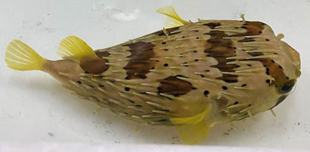
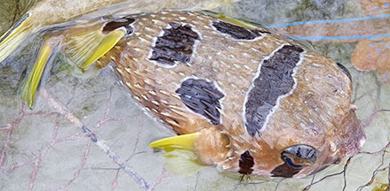

|
|
| fishes text index | photo index |
| Phylum Chordata > Subphylum Vertebrata > fishes |
| Porcupinefishes Family Diodontidae updated Sep 2020 Where seen? These round spiky fishes are seldom seen. So far, in seagrass meadows. What are pufferfishes? Porcupinefishes belong to the Family Diodontidae. According to FishBase: the family has 19 genera and 121 species. They are found in tropical and subtropical ares of the Atlantic, Indian and Pacific oceans. Other similar fishes belong to different families: boxfishes and cowfishes to Family Ostraciidae, and pufferfished to Family Tetraodontidae. Features: About 15cm but can grow to 50cm. Like more familiar pufferfishes, the porcupinefish can also inflate its body which is covered in well-developed sharp spines. In some species the spines erect only when the body is inflated. Jaws with 2 fused teeth (parrotlike). They are poor swimmers. |
 Freckled porcupinefish (Diodon holacanthus) Changi, Apr 20 Photo shared by Adib Adris on Singapore Biodiversity Records. |
| What do they eat? They eat mainly hard-shelled invertebrates like snails, crabs, sea urchins, crushing these with their beak-like teeth. Some are only active at night. |
 Black-blotched porcupinefish (Diodon liturosus) Cyrene, Feb 20 Photo shared by Jonathan Tan on facebook. |
| Human uses: Some species are harvested for traditional chinese medicine. Status and threats: Our porcupinefishes are not listed as among the threatened animals of Singapore. However, like other creatures of the intertidal zone, they are affected by human activities such as reclamation and pollution. Over-collection can also have an impact on local populations. |
| Family
Diodontidae recorded for Singapore from Wee Y.C. and Peter K. L. Ng. 1994. A First Look at Biodiversity in Singapore. *from Lim, Kelvin K. P. & Jeffrey K. Y. Low, 1998. A Guide to the Common Marine Fishes of Singapore.
|
Links
References
|